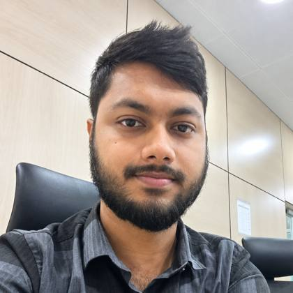

ITS and network engineer, Dhaka
Md. Tamim Ahmed Opi
I keep highway technology running: traffic detection, message signs, CCTV, speed enforcement and the networks and servers behind them.
Move your pointer over the road to check each car’s speed (limit 80), or over a pole to see what it is. Watch the VDS pole: it raises an alert when it spots something.
About
I’m a CSE graduate with more than two years of hands-on work in Intelligent Transportation Systems, IT infrastructure, network configuration and troubleshooting. I support system reliability, fix technical faults, coordinate field teams and write the documentation that keeps everyone aligned.
How the corridor talks to the control room
Tap a node or a button to see what I do at that point. The dots are data moving to the centre.
Experience
Resident Engineer, Installation and Customer Support
VaaaN Infra Private Limited, May 2024 to present
Project: Improving the Reliability and Safety of National Highway Corridors in Bangladesh
- ITS infrastructure. Manage and maintain devices at the Traffic Management Centre: vehicle detection, variable message signs, CCTV and speed enforcement.
- Monitoring. Watch server health and device status in SolarWinds and the NMS to keep downtime low.
- Troubleshooting. Diagnose faults in TMC servers, hardware and software.
- Installation and configuration. Install, network and configure new ITS devices so they connect properly.
- Data security. Run backups and log storage, and document system activity.
- Reporting and resources. Write technical reports on road incidents and system faults, work with field teams to resolve them, prepare material and cost estimates, and manage procurement requisitions.
Research
Enhancing Network Intrusion Detection System
Undergraduate thesis
Built a machine learning model that detects network anomalies and security threats on the CICIDS-2017 dataset, and compared how well different methods detect intrusions in traffic patterns.
Skills
Education and training
B.Sc. in Computer Science and Engineering
Daffodil International University, 2024, CGPA 3.40 / 4.00
Higher Secondary Certificate, Science
Bhola Government College, 2019, GPA 4.75 / 5.00
Secondary School Certificate, Science
Bhola Abdur Rob High School and College, 2017, GPA 5.00 / 5.00
Certifications
ITS O&M Certification, KOICA, South Korea. CCNA training, E-Learning & Earning Institute.
From the field and the control room
Contact
- tamimahmedopi@gmail.com
- Phone
- +880 1790 375957
- GitHub
- github.com/opi2001
- linkedin.com/in/md-tamim-ahmed-opi
- Location
- Dhaka, Bangladesh